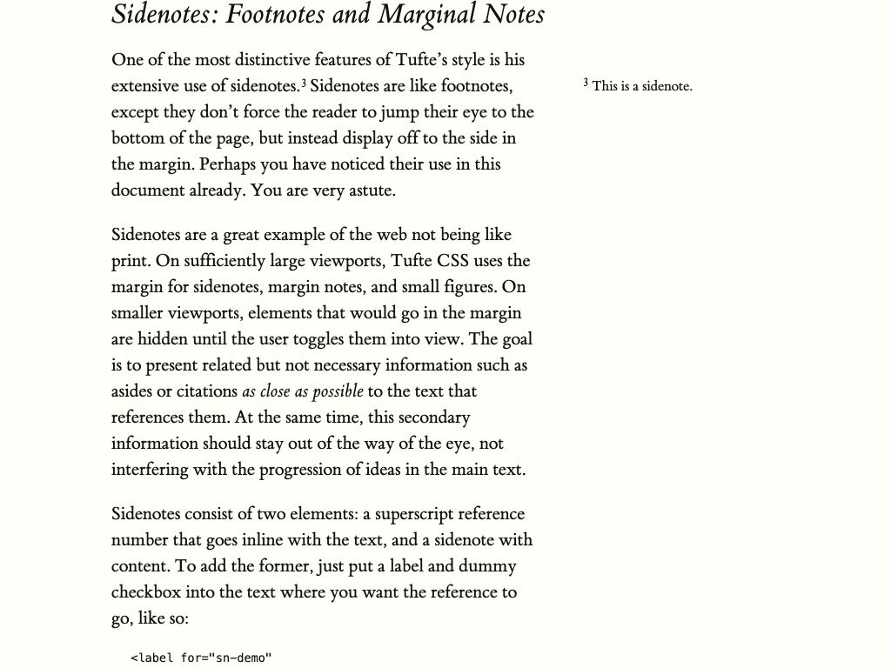

인용문을 중심으로, 생각이 양쪽에서 이어지는 화면
왼쪽 문장별 메모 · 가운데 인용문 · 오른쪽 메모. 오른쪽을 사이드바 카드로 나누지 않고, 본문과 같은 서체·행간의 긴 글로 이어지는 시안입니다. 메모 접기·펼치기, 자동 저장과 초안 보존은 유지합니다.
추천 ①과 제목·메모 시작점 후속 교정을 실제 제품에 구현했습니다. 구현 결과·검증 보기 · 화살표 위치·검증 확인. 아래 작업대는 선택 당시의 비교안이며 새로 조절한 임의 값은 추가 제품 승인으로 간주하지 않습니다.
세 열을 하나의 묶음으로 배치합니다. 본문 > 책 전체 메모 > 문장별 메모의 폭을 유지하며 양쪽 간격을 맞춥니다. 넓은 화면에서도 메모가 가장자리로 멀어지지 않습니다.
현재 읽기 영역 · 축소 미리보기 크게 보기
설계값 · 읽기 폭과 간격
수치는 CSS px입니다. 폭은 최대값이며 공간이 부족하면 가용 폭에 맞춰 줄입니다. 실제 적용 폭은 아래 실측에 표시합니다.
비교 환경 · 공간과 내용
1024px에서 세 열을 함께 쓰기 위해 서재를 자동으로 접하는 기준을 제품에 구현했습니다. 이 작업대에서 바꾼 다른 폭·간격은 새 승인이나 제품 변경이 아닙니다.
설계값 저장·전달
시안에서 글을 써보고 폭·간격을 조절한 뒤 선택할 수 있습니다.
설계값과 비교 환경을 분리해 저장합니다. 입력한 메모 내용은 내보내지 않습니다. 디자인 선택은 제품 적용·배포 승인과 구분합니다.
현재 화면에서 실제 적용된 값
| 실측 | 값 | 의미 |
|---|---|---|
| 시안을 불러오는 중… | ||
조사 결과와 추천 이유
구현 전 실제 앱의 1024×768 화면에서 책 메모는 화면 오른쪽 끝의 320px 패널이었습니다. 56px 헤더와 52px 푸터가 있고 글자는 14px이었습니다. 당시 제품 코드는 메모를 별도 오른쪽 패널로, 댓글을 인용문 왼쪽 여백의 중앙으로 배치해 넓은 화면에서 두 메모가 본문과 서로 다른 거리로 떨어질 수 있었습니다.
추천 ①은 가운데 인용문을 중심으로 두 메모를 가까이 묶되 폭을 똑같이 나누지는 않습니다. 댓글은 구절을 따라 함께 스크롤하고, 책 전체 메모는 자기 스크롤을 유지합니다. 책 메모에는 별도 배경·테두리·고정 푸터를 제거하고 글이 이어지는 표현을 적용했습니다. 저장 안내와 재시도 조작은 조용한 위치에 남깁니다.
②는 인용문 중심을 가용 영역 중심에 고정합니다. 폭이 서로 다른 양쪽 메모를 수용하려면 더 큰 쪽을 기준으로 양쪽 공간을 확보하므로, 1024px에서는 인용문이 ①보다 더 좁아질 수 있습니다. ③은 오른쪽 메모를 넓혀 긴 글 작성에 유리하지만 댓글과의 폭 차이가 더 커집니다.
1024px와 4K를 함께 확인했습니다. 4K 전체 화면은 여백 분포를, ‘읽기 영역 확대’는 실제 글자·줄바꿈을 보여줍니다. 서재를 펼친 1024px에서 큰 글자와 세 열을 모두 넓게 유지하기 어려워, 사용자 선택에 따라 ①과 공간 부족 시 서재 자동 접기를 구현했습니다.
실제 사례에서 가져온 원리


기능 보존·구현 영향·검증 범위
보존할 기능: 책별 단일 메모, 800ms 자동 저장·지금 저장·실패 재시도, 계정/책별 초안 복구와 저장 직렬화, 책·저자 병합 규칙, 접기·펼치기 중 저장과 읽기 위치, 댓글의 구절 연결·행 높이·함께 스크롤, 기존 모바일 하단 시트.
추천 ①과 후속 정렬 교정을 제품의 MainLayout·ArchiveScreen·BookMemoPanel 경로에 구현하고 새 공간 규칙을 Policy에 반영했습니다. 이 비교 작업대의 다른 슬라이더 값은 제품 구현과 분리됩니다.
브라우저에서 세 안을 1024px·4K의 같은 예제로 대조했습니다. ①의 실제 인용문 글자 폭은 1024px에서 약 338px, 4K에서 500px이며 입력창 글자 폭도 같습니다. 양쪽 메모와의 텍스트 영역 간격은 각각 약 81.5px / 94px로 대칭입니다. 메모 접기·펼치기 중 내용·인용문 좌표·로컬 자동 저장이 유지됐습니다. 저장 실패·재시도, 설정 저장·복원·JSON 본문·잘못된 가져오기, Night·24px 글자를 확인했습니다.
조절 패널의 클릭을 가리던 미리보기 고정을 수정하고 축소 미리보기로 결과를 계속 보여 줍니다. 개발 중 중복 React 루트 생성 경고도 수정했습니다. 전체 테마 CSS의 기존 질감 참고 경고는 원본 참조로 유지하며 새 질감을 추가하지 않았습니다.
이 HTML은 역사적 디자인 비교 작업대입니다. 실제 제품 구현·현재 검증은 구현 결과 보고서에서 확인합니다. 실제 계정 메모 쓰기·운영 배포·장기간 작성 편의는 여전히 미검증입니다.
사용자가 ①과 후속 정렬 교정을 선택해 제품에 구현했습니다. 이 작업대에서 이후 바꾼 폭·간격은 새 승인이나 제품 적용이 아닙니다.